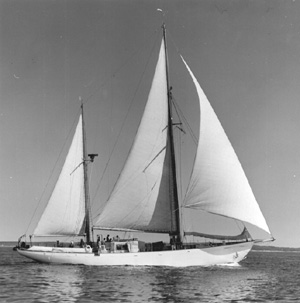

|  copyright - WHOI |
|
The Aries, a 93 foot ketch, arrived in Woods Hole in March 1959
as a gift from R.J. Reynolds. She was refitted as a research vessel by
June 1959 and was then used continuously on current measuring cruises off
Bermuda as part of a joint project shared by WHOI and the British National
Institute of Oceanography until August 1960. Her longest stay ashore
was from December 14th, 1959, until February 2nd, 1960, when her engine
was replaced by the a spare reconditioned and brought from England. Bermuda
proved to be a particularly good base for the Aries since her fresh water
storage limited her time at sea to about two weeks.
Aries spent a total of 206 days at sea, 186 days of which were on cruises to deep-water, and of this deep-water time 129 days were spent in the selected working area. Captain J. W. Gates was in charge until after the refit when Captain H. H. Seibert took over until the end of the project. Mr. C. L. McCann was mate for the entire period. (See Oceanus Vol. VII, No.3, March 1961)